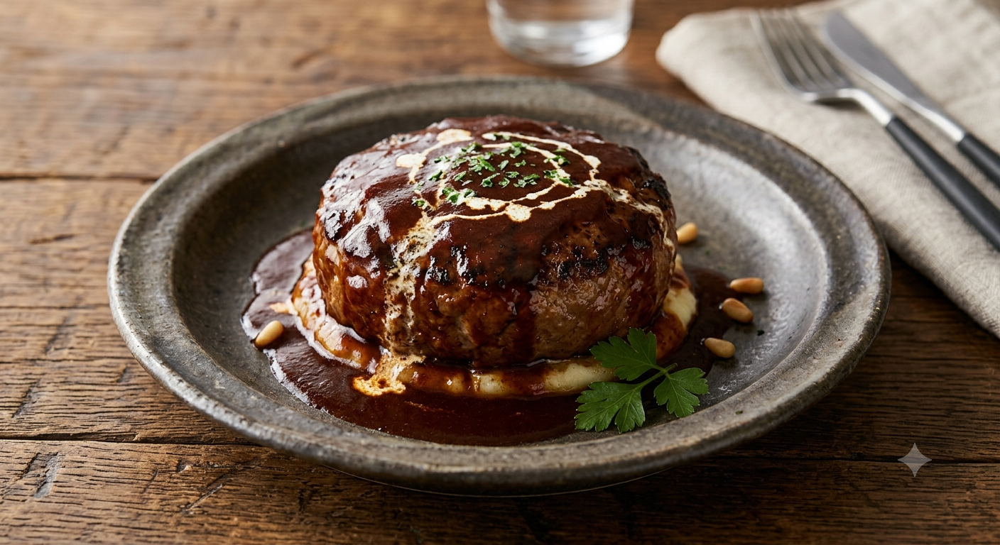

久慈 琥珀博物館直営レストラン
「オールグリーン」のパノラマに抱かれ、
最高級短角牛ハンバーグと過ごす、特別な休日。
平日なら、より静かな特等席をご案内できます
肉本来の力強さを引き出す、伝統の調理法。
お電話でのご予約が最もスムーズです
0194-59-3881VISUAL EXPERIENCE

「窓からの景色はオールグリーン。お食事はもちろん、景色だけでも満足なランチでした！」
ACCESS MAP
〒028-0071
岩手県久慈市小久慈町
第19地割156-134
※久慈琥珀博物館 敷地内
11:30 ～ 14:30
定休日：不定休
初めて食べました！
「窓からの景色はオールグリーン。お食事はもちろん、景色だけでも満足なランチでした！」
お電話の対応も素敵でした
「お料理の提供タイミングも絶妙で、大変満足でした。地元でも愛される素敵なお店です。」
久慈の自然と文化を五感ですべて味わい尽くす、現在企画中のスペシャルプログラムです。
午前中は、久慈の豊かな森を散策しながら木々のぬくもりに触れる「木工・ボタニカルクラフト体験（または森のガイドツアー）」を実施。心身がリフレッシュしたあとは、当店の看板メニューである「最高級短角牛ハンバーグランチコース」で贅沢なひとときをお楽しみいただけます。
10:00 〜 森のワークショップ
自然素材を使ったクラフトやガイドウォークを体験。
12:00 〜 特製ランチコース
オールグリーンの窓際席で短角牛ハンバーグを堪能。
14:00 〜 お見送り・解散
久慈琥珀博物館へのご入館も自由に楽しめます。